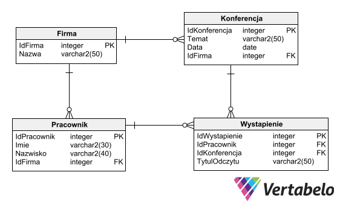
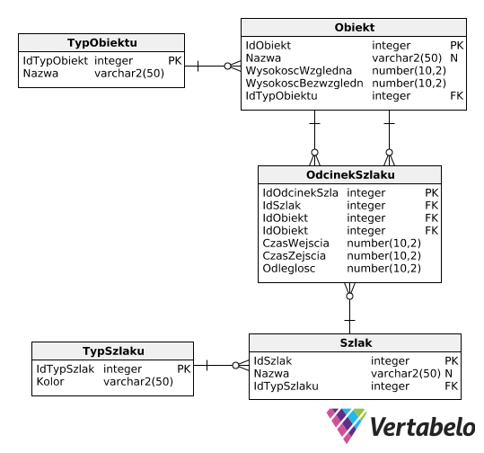
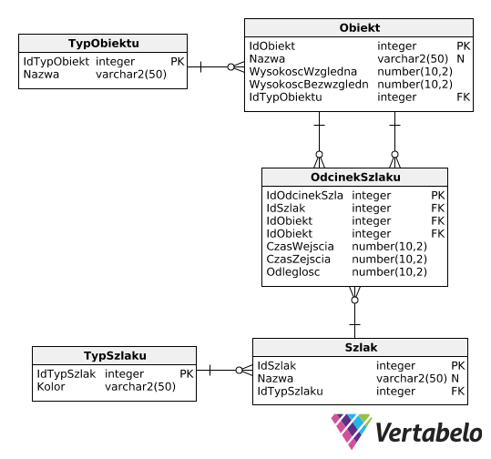

Zaproponuj schemat bazy danych dla USC, w której będą przechowywane podstawowe dane o obywatelach:
• Dane personalne,
• Informacje o pokrewieństwie,
• Informacje o miejscu zamieszkania (musi być możliwość podziału obywateli ze względu na miasto, w którym mieszkają),
• Informacje o małżeństwach,
• Każdy obywatel może zawrzeć wiele związków małżeńskich,
• W bazie danych powinny być przechowywane informacje o osobach zmarłych. Zadanie 2: Ewidencja klientów
Firma potrzebuje bazy danych służącej do ewidencji klientów (imię, nazwisko, adres). Każdy klient jest obsługiwany, w danym momencie, przez jednego przedstawiciela (imię, nazwisko), przedstawiciel może obsługiwać wielu klientów. Przedstawiciele na przestrzeni lat mogą się zmieniać. Chcemy przechowywać informację dotyczące historii przedstawicieli danego klienta. Każdy przedstawiciel należy do jednego z wielu oddziałów firmy. Każdy klient ma określony status (np. aktywny klient, dawny klient, potencjalny itp.). W bazie musimy przechowywać również informacje o kontaktach z klientem. Musimy pamiętać datę kontaktu, opis i typ kontaktu. Typem może być np. e-mail, telefon, fax itp. Kontakt może nawiązać tylko i wyłącznie przedstawiciel przypisany do klienta. Zadanie 3: Klinika weterynaryjna
Klinika weterynaryjna potrzebuje bazy danych rejestrującej klientów, ich zwierzęta, wizyty, usługi (według kategorii) oraz weterynarzy przyjmujących wizyty. Jeden klient może mieć kilka zwierząt. Wizyta dotyczy jednego zwierzęcia, jednego weterynarza oraz jednej lub więcej usług. Zadanie 4: Konferencje
Zaprojektuj diagram związków encji dla firmy, która zajmuje się organizacją konferencji. Firma chce przechowywać dane dotyczące klientów (firm), dane osób wraz z ich przynależnością do firmy (załóżmy, że osoba pracuje w jednej firmie), dane dotyczące organizowanych konferencji (data, temat). Zakładamy, że konferencję organizuje jedna firma. Musimy przechowywać również informacje o prelegentach (osobach z firmy) – na każdej konferencji jest wielu prelegentów. Dla każdego prelegenta musimy pamiętać tytuł odczytu.  Zadanie 5: Reakcje chemiczne
Twoim zadaniem jest zaproponowanie diagramu związków encji dla bazy danych, która służy do opisywania reakcji chemicznych. Wymagane elementy bazy to:
Tabela przedstawiająca dostępne w laboratorium chemicznym pierwiastki. Każdy pierwiastek powinien mieć określoną nazwę, symbol, opis właściwości oraz ilość (masę) dostępną w laboratorium.
Tabela opisująca związki chemiczne. Dla każdego związku powinny być dostarczone informacje takie jak nazwa, symbol chemiczny oraz opis i ilość dostępna w laboratorium.
Dodatkowo, każda reakcja chemiczna przeprowadzona w laboratorium powinna być opisana w bazie. Opis powinien zawierać nazwę reakcji, składniki początkowe (czyli użyte pierwiastki lub związki chemiczne) wraz z ich ilościami (masami), produkty powstałe w wyniku reakcji oraz datę wykonania tej reakcji. W reakcji może uczestniczyć zarówno jeden, jak i wiele pierwiastków lub związków chemicznych.
 Zadanie 6: Szlaki
Zadanie 6: Szlaki Zaproponować diagram związków encji bazy danych dotyczących wycieczek górskich. Mamy przechowywać informację o szczytach górskich (ich nazwie, wysokości względnej i bezwzględnej), o schroniskach i szlakach je łączących. Chcemy wiedzieć jaki kolor ma szlak i jaki jest czas wejścia i zejścia tym szlakiem. Baza danych musi dawać odpowiedź na pytanie ile czasu będzie trwała wycieczka z danego schroniska na dany szczyt, ewentualnie przez inne schronisko i inny szczyt; powrót ewentualnie do innego schroniska.
 
1. Znajdź pracowników z pensją równą minimalnemu zarobkowi w
firmie.

1. Znajdź pracowników z pensją równą minimalnemu zarobkowi w
firmie. 2. Znajdź wszystkich pracowników zatrudnionych na tym samym stanowisku, co BLAKE.
3. Znajdź pracowników, których płace wynoszą tyle, ile najniższe zarobki w poszczególnych departamentach.
4. Stosując kwantyfikator ANY wybierz pracowników zarabiających powyżej najniższego zarobku z departamentu 30 (czyli więcej od dowolnego pracownika z departamentu 30).
5. Stosując kwantyfikator ALL znajdź pracowników, których zarobki są wyższe od pensji każdego pracownika z departamentu 30 (czyli większe od najwyższej pensji w departamencie 30).
6. Wybierz departamenty, których średnie zarobki przekraczają średni zarobek departamentu 30.
7. Znajdź pracowników, którzy zarabiają najwięcej w swoich departamentach.
8. Znajdź za pomocą predykatu EXISTS pracowników, którzy posiadają podwładnych.
9. Znajdź pracowników, których departament nie występuje w tabeli DEPT.
10. Podaj nazwisko, pensję i nazwę departamentu pracowników, których płaca przekracza średnią ich grup zarobkowych.
11. Znajdź pracowników zarabiających minimalną pensję w ich grupach zarobkowych. Wynikowe rekordy uporządkuj według malejących grup zarobkowych.
12. Wypisz nazwisko, płacę, numer departamentu i średnią zarobków w departamencie (w jednym wyniku!) dla pracowników, których zarobki przekraczają średnią ich departamentów (rozwiązanie nie wymaga użycia korelacji). --1
SELECT * FROM emp e WHERE e.sal = (SELECT MIN(sal) FROM emp);
--2
SELECT * FROM emp e WHERE e.job = ( SELECT job FROM emp WHERE ename = 'BLAKE');
--3
SELECT * FROM emp e WHERE e.sal IN (SELECT MIN(sal) FROM emp GROUP BY deptno);
--4
SELECT * FROM emp e WHERE e.sal > ANY(SELECT sal FROM emp WHERE deptno=30); SELECT * FROM emp e WHERE e.sal > (SELECT MIN(sal) FROM emp WHERE deptno=30);
--5
SELECT * FROM emp e WHERE e.sal > ALL(SELECT sal FROM emp WHERE deptno=30); SELECT * FROM emp e WHERE e.sal > (SELECT MAX(sal) FROM emp WHERE deptno = 30);
--6
SELECT d.dname FROM emp e JOIN dept d ON d.deptno = e.deptno GROUP BY e.deptno, d.dname HAVING AVG(e.sal) > (SELECT AVG(e2.sal) FROM emp e2 WHERE e2.deptno = 30);
--7
SELECT e.* FROM emp e WHERE e.sal = (SELECT MAX(e2.sal) FROM emp e2 WHERE e2.deptno = e.deptno);
--8
SELECT * FROM emp e WHERE EXISTS (SELECT 1 FROM emp e2 WHERE e2.mgr = e.empno);
--9
SELECT * FROM emp e WHERE NOT EXISTS (SELECT 1 FROM dept d WHERE d.deptno = e.deptno); --bez korelacji SELECT * FROM emp e WHERE e.deptno NOT IN (SELECT deptno FROM dept);
--10
SELECT e.ename, e.sal, e.deptno, s.grade FROM emp e JOIN salgrade s ON e.sal BETWEEN s.losal AND s.hisal WHERE e.sal > (SELECT AVG(e2.sal) FROM emp e2 JOIN salgrade s2 ON e2.sal BETWEEN s2.losal AND s2.hisal WHERE s2.grade = s.grade);
--11
SELECT e.ename, e.sal, s.grade FROM emp e JOIN salgrade s ON e.sal BETWEEN s.losal AND s.hisal WHERE e.sal = (SELECT MIN(e2.sal) FROM emp e2 JOIN salgrade s2 ON e2.sal BETWEEN s2.losal AND s2.hisal WHERE s2.grade = s.grade) ORDER BY s.grade;
--12
SELECT e.ename, e.sal, e.deptno, sub.av "Srednia w departamencie" FROM (SELECT ROUND(AVG(e2.sal),2) av, e2.deptno FROM emp e2 GROUP BY e2.deptno) sub JOIN emp e on sub.deptno = e.deptno WHERE e.sal > sub.av;
T-SQL
1. Napisz prosty program w Transact-SQL. Zadeklaruj zmienną, przypisz na tą zmienną liczbę rekordów w tabeli Emp (lub jakiejkolwiek innej) i wypisz uzyskany wynik używając instrukcji PRINT, w postaci napisu np. "W tabeli jest 10 osób".2. Używając Transact-SQL, policz liczbę pracowników z tabeli EMP. Jeśli liczba jest mniejsza niż 16, wstaw pracownika Kowalskiego i wypisz komunikat. W przeciwnym przypadku wypisz komunikat informujący o tym, że nie wstawiono danych.
3.Napisz procedurę zwracającą pracowników, którzy zarabiają więcej niż wartość zadana parametrem procedury.
4. Napisz procedurę zwracającą pracowników, którzy zarabiają więcej niż wartość zadana parametrem procedury.
5. Napisz procedurę umożliwiającą użytkownikowi wprowadzanie nowych pracowników do tabeli EMP. Jako parametry będziemy podawać nazwisko i nr działu zatrudnianego pracownika. Procedura powinna wprowadzając nowy rekord sprawdzić, czy wprowadzany dział istnieje (jeżeli nie, to należy zgłosić błąd) oraz obliczyć mu pensję równą minimalnemu zarobkowi w tym dziale. EMPNO nowego pracownika powinno zostać wyliczone jako najwyższa istniejąca wartość w tabeli + 1. 6. Przy pomocy kursora przejrzyj wszystkich pracowników i zmodyfikuj wynagrodzenia tak, aby osoby zarabiające mniej niż 1000 miały zwiększone wynagrodzenie o 10%, natomiast osoby zarabiające powyżej 1500 miały zmniejszone wynagrodzenie o 10%. Wypisz na ekran każdą wprowadzoną zmianę.
7. Przerób kod z zadania 1 na procedurę tak, aby wartości zarobków (1000 i 1500) nie były stałe, tylko były parametrami procedury.
8. W procedurze sprawdź średnią wartość zarobków z tabeli EMP z działu określonego parametrem procedury. Następnie należy dać prowizję (comm) tym pracownikom tego działu, którzy zarabiają poniżej średniej. Prowizja powinna wynosić 5% ich miesięcznego wynagrodzenia.
9. (bez kursora) Utwórz tabelę Magazyn (IdPozycji, Nazwa, Ilosc) zawierającą ilości poszczególnych towarów w magazynie i wstaw do niej kilka przykładowych rekordów. W bloku Transact-SQL sprawdź, którego artykułu jest najwięcej w magazynie i zmniejsz ilość tego artykułu o 5 (jeśli stan jest większy lub równy 5, w przeciwnym wypadku zgłoś błąd).
10. Przerób kod z zadania 4 na procedurę, której będziemy mogli podać wartość, o którą zmniejszamy stan (zamiast wpisanego „na sztywno” 5). 1. Utwórz wyzwalacz, który nie pozwoli usunąć rekordu z tabeli Emp.
2. Utwórz wyzwalacz, który przy wstawianiu pracownika do tabeli Emp, wstawi prowizję równą 0, jeśli prowizja była pusta. Uwaga: Zadanie da się wykonać bez użycia wyzwalaczy przy pomocy DEFAULT. Użyjmy jednak wyzwalacza w celach treningowych.
3. Utwórz wyzwalacz, który przy wstawianiu lub modyfikowaniu danych w tabeli Emp sprawdzi czy nowe zarobki (wstawiane lub modyfikowane) są większe niż 1000. W przeciwnym przypadku wyzwalacz powinien zgłosić błąd i nie dopuścić do wstawienia rekordu. Uwaga: Ten sam efekt można uzyskać łatwiej przy pomocy więzów spójności typu CHECK. Użyjmy wyzwalacza w celach treningowych.
4. Utwórz tabelę budzet: CREATE TABLE budzet (wartosc INT NOT NULL) W tabeli tej będzie przechowywana łączna wartość wynagrodzenia wszystkich pracowników. Tabela będzie zawsze zawierała jeden wiersz. Należy najpierw obliczyć początkową wartość zarobków: INSERT INTO budzet (wartosc) SELECT SUM(sal) FROM emp Utwórz wyzwalacz, który będzie pilnował, aby wartość w tabeli budzet była zawsze aktualna, a więc przy wszystkich operacjach aktualizujących tabelę emp (INSERT, UPDATE, DELETE), wyzwalacz będzie aktualizował wpis w tabeli budżet
5. Napisz wyzwalacz, który nie pozwoli modyfikować nazw działów w tabeli dept. Powinno być jednak możliwe wstawianie nowych działów.
6. Napisz jeden wyzwalacz, który:
• Nie pozwoli usunąć pracownika, którego pensja jest większa od 0.
• Nie pozwoli zmienić nazwiska pracownika.
• Nie pozwoli wstawić pracownika, który już istnieje (sprawdzając po nazwisku).
7. Napisz wyzwalacz, który:
• Nie pozwoli zmniejszać pensji.
• Nie pozwoli usuwać pracowników.